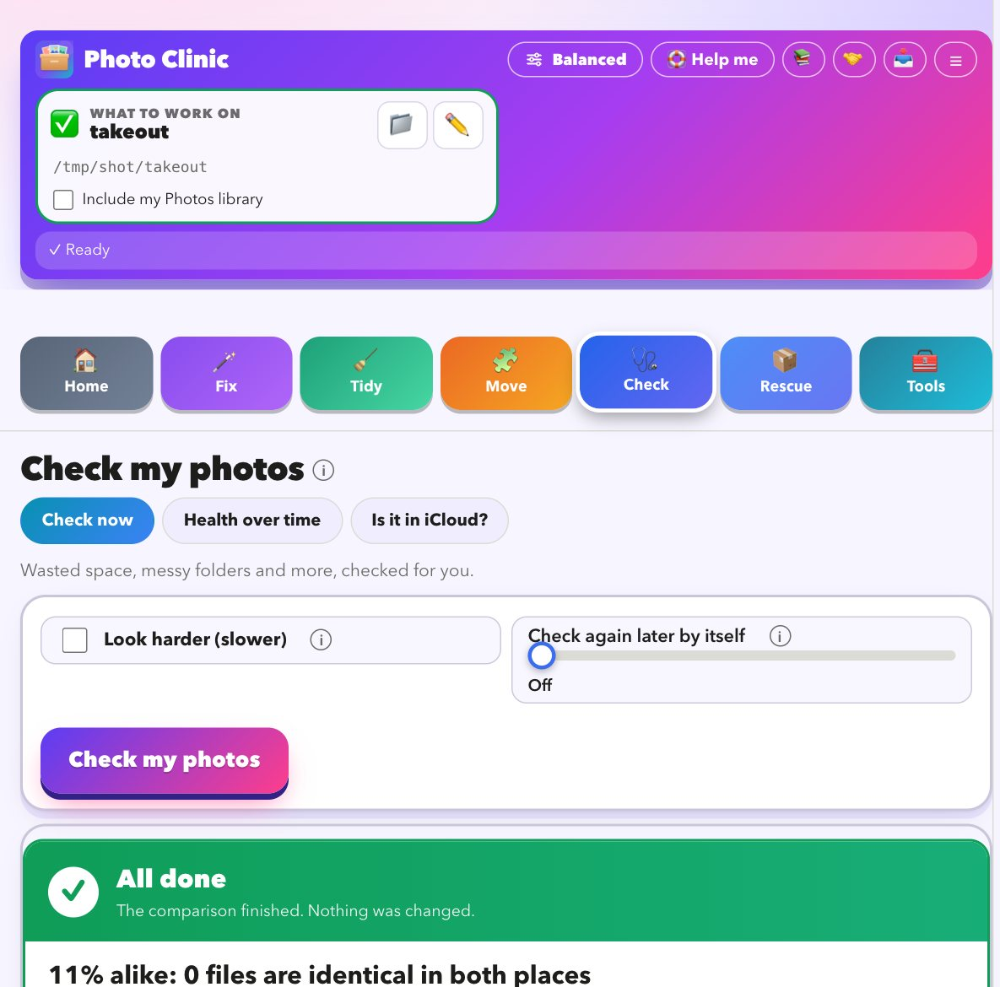
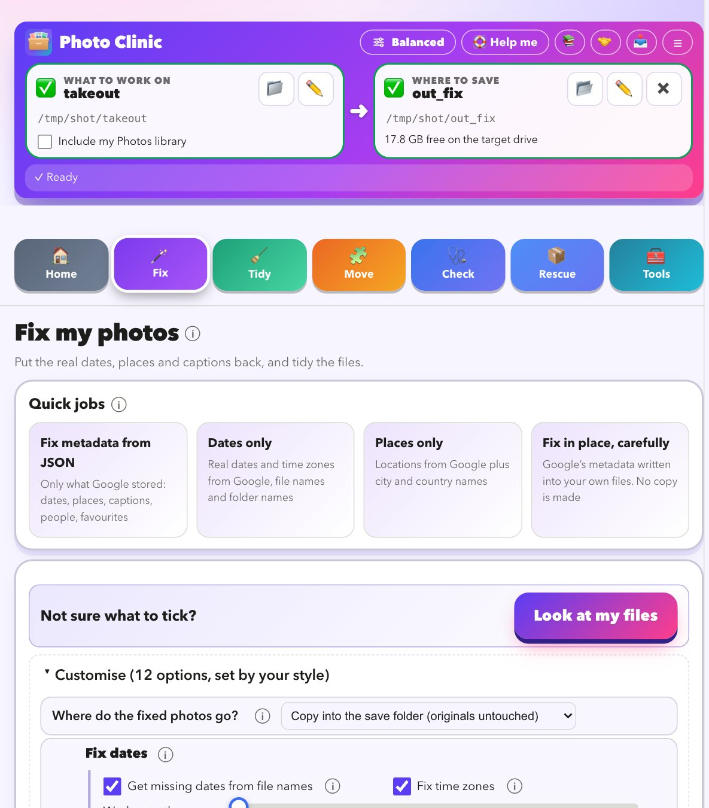
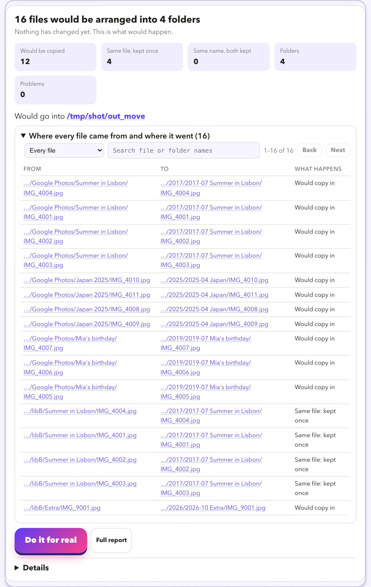
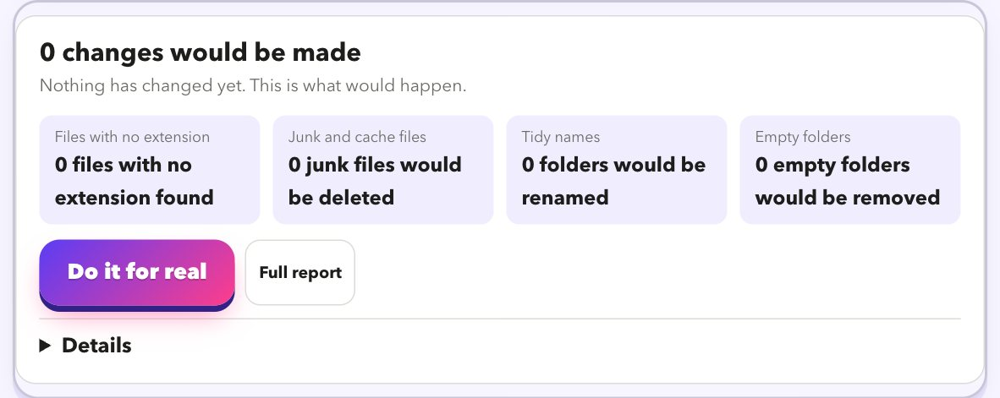
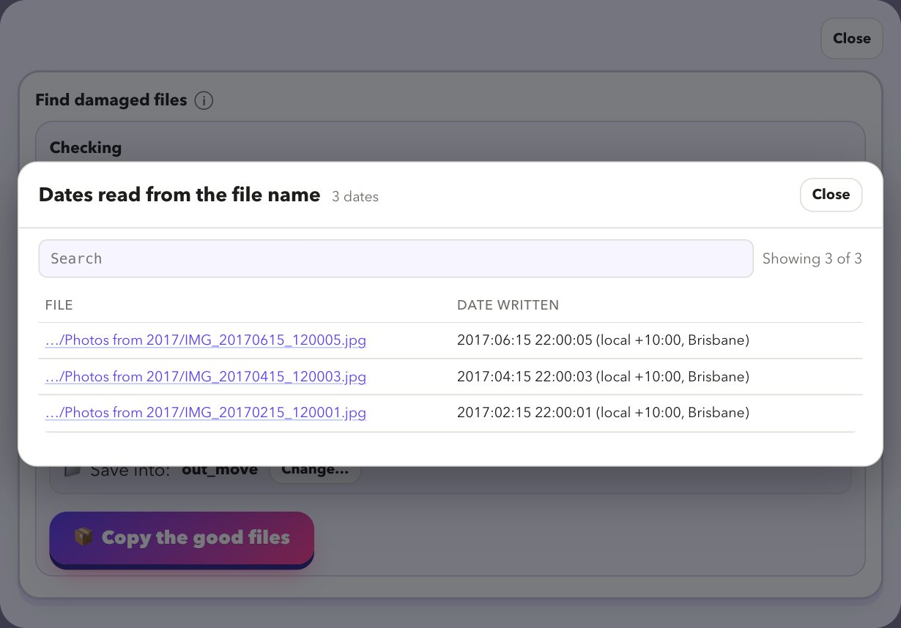
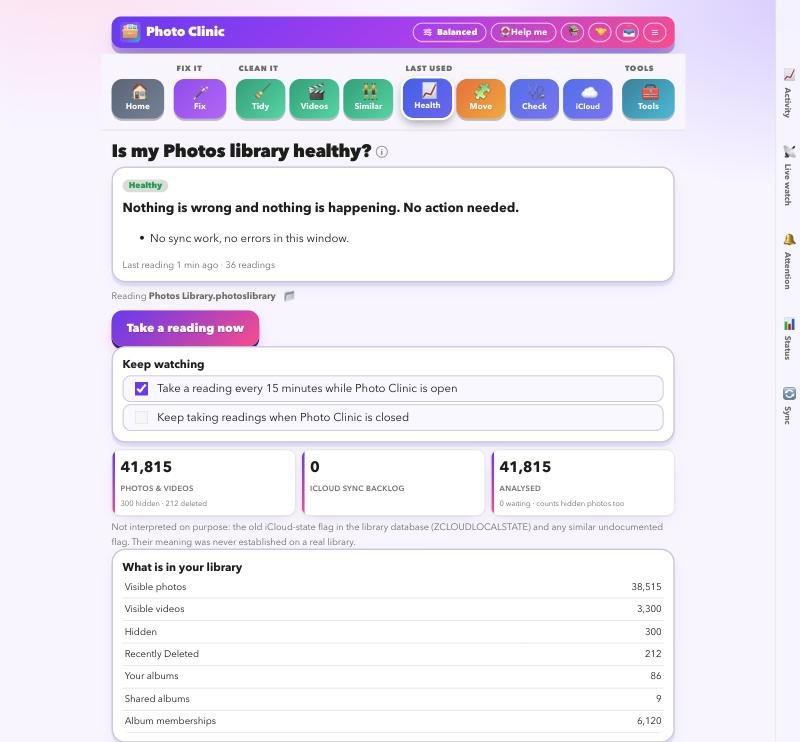

Everything Photo Clinic does
The six jobs, with a real screenshot of each. Every job starts with a preview that changes nothing.
One scan tells you what is wrong, and what to do first
Point it at your folders, a Takeout or your Photos library. It reads everything, gives a health score out of 100, and writes a plan in plain words.
- A score out of 100, then a plan: what would be fixed, what is duplicated, what is damaged, which videos will not play
- Every line has Show me and Do it now, then Check again to prove it worked
- Reads the hidden Photos and iCloud messages and explains each in plain words, with steps to try
- Start here asks what you have and builds the steps in order

Put the real dates, places and captions back
Google Takeout leaves the date, place and caption in separate .json files and sends the photo bare. Photo Clinic matches them up and writes everything back.
- Matches every photo to its .json, even across many zips and cut-off or numbered names
- Writes date (in local time, with the right offset), place, caption, people and favourites into the photo
- Pairs Live Photos with their video and keeps album names; handles Google's edited copies
- Photos with no date get one worked out from the file name or folder, and every guess is labelled
- Five styles from Safest to I like risk, offline place names, and time-zone correction

Get everything to the right place, and into Apple Photos
Pull your photos from the cloud, put the pile in order, and send it to Apple Photos in a way it can cope with.
- Copy iCloud Drive to your own drive, one file at a time, even files only in iCloud; it carries on after a sleep or restart
- Download a Google Drive folder, or every link in a Takeout email, with a checklist
- Unzip Takeout on a Synology NAS without pulling it across your network, and check each zip before it is removed
- Show which photos are not in Apple Photos yet before you import, including iCloud-only pictures
- Send to Apple Photos oldest first in careful batches, Live Photos kept together, folders turned into albums
- Organise folders, zips and old libraries into one library filed by year and month

Clear duplicates and leftovers, and make old videos play
Everything is found by content, shown to you, and moved aside rather than deleted.
- Exact copies found by content, not name, and moved to a spare folder
- Look-alikes and the same picture saved in different formats, side by side with a suggested keeper
- Tidy leftovers in a safe order: file extensions, Google's extra .json files, junk and caches, names, empty folders
- Move non-photo files into their own
_other_filesfolder - Convert AVI, MPG, WMV, MTS and 3GP to MP4, without re-encoding when it can

Get photos back from damaged files, failing drives and old libraries
For the pictures you thought were gone.
- Finds photos that stopped short, empty files and zips that did not finish, with the reason for each
- Copies what still reads from a failing drive, gently, and tries the stuck files last
- Reads old iPhoto and Aperture libraries so albums, events, keywords and ratings come out with the pictures
- Compares two places or two libraries and shows how alike they are, then clears what is identical

See what Apple Photos and iCloud are really doing
Photos will not tell you why it has stopped. Photo Clinic reads what it keeps to itself.
- A reading of how your library is doing every 15 minutes
- A live meter of upload speed and what is still waiting
- Known Photos problems recognised and explained, with fixes to try
- A gentle keep-alive, and Apple's own status one click away

Twenty things it can do
Each one links to how it works.
Built so you cannot hurt your photos
How we keep your photos safe →
How it works
- Tell it what you have. Drop in your Takeout zips, a folder, an old library, or point it at your Photos library.
- Read the preview. It shows what would change. Nothing is touched yet.
- Press go. Your photos are copied, fixed and tidied into a new folder. Your originals stay as they were.
What went wrong for us
We tried to move a big library out of Google Photos and into Apple Photos. It is probably what is going wrong for you too.
The photos come out, the story does not
Google keeps the dates, places and captions in separate files. The photos arrive bare, and many show the day you downloaded them.
How we fix that →Duplicates multiply
Edited copies, album copies, the same picture at two sizes. It is hard to tell what is safe to remove.
How we sort them →Apple Photos will not tell you what it is doing
Imports have no undo. iCloud can take days to catch up, and the reasons are buried in logs nobody reads.
What we read for you →Old libraries and tired drives
Old iPhoto and Aperture libraries, and drives that stall halfway through a copy.
How we get them out →Read what we learned, in plain words →
Questions we hear
- How do I fix Google Takeout metadata on a Mac?
- Why do my Google Takeout photos show the wrong date?
- What are all those .json files in my Takeout?
- How do I move from Google Photos to Apple Photos?
- Is iCloud Photos slow, or stuck?
- How do I find and remove duplicate photos on a Mac?
- How do I copy iCloud Drive to an external drive on a Mac?
- How do I download a Google Drive folder, or my Takeout files from an email?
- How do I find which photos are not in Apple Photos yet?
- How do I find damaged or unreadable photos?
Look at your library for free
Download it, point it at your photos, and read the preview. That costs nothing and changes nothing.
Download for MacFree · Apple silicon Macs · signed and checked by Apple